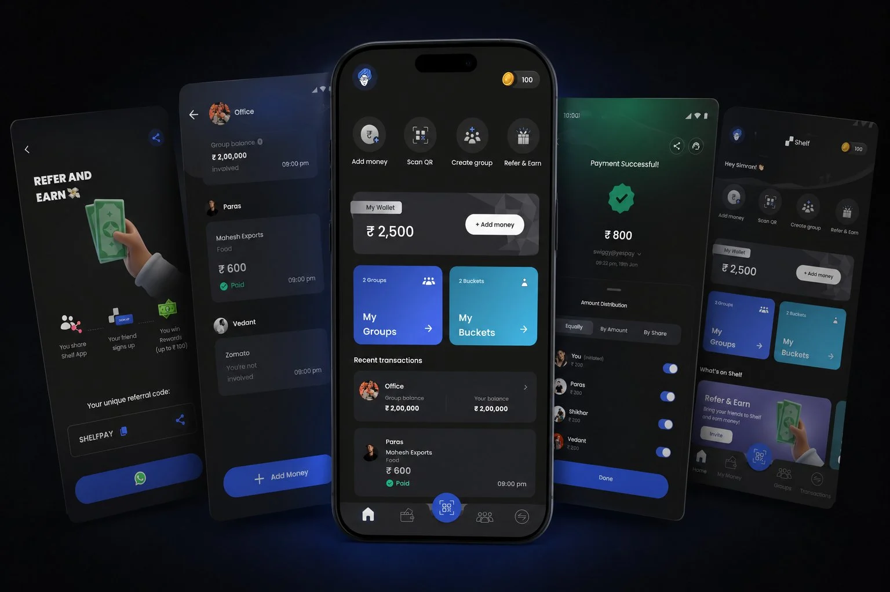
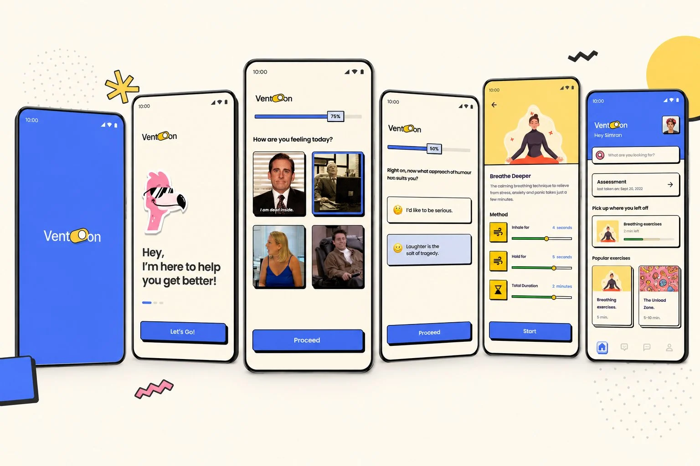
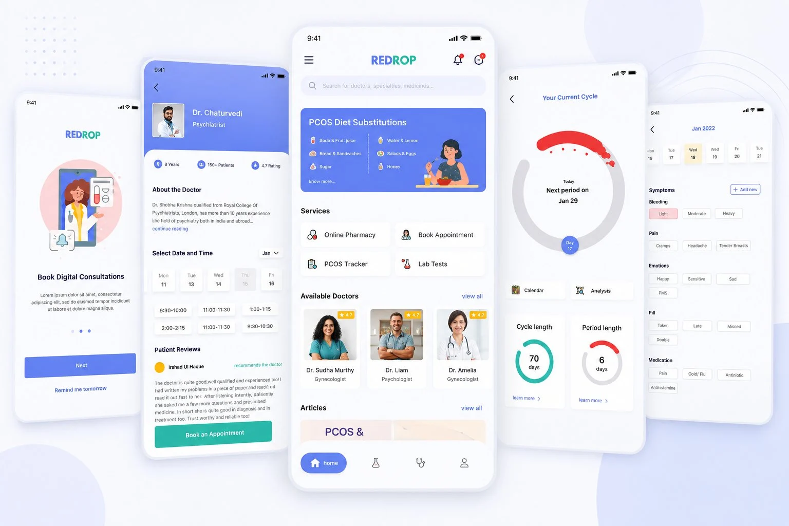
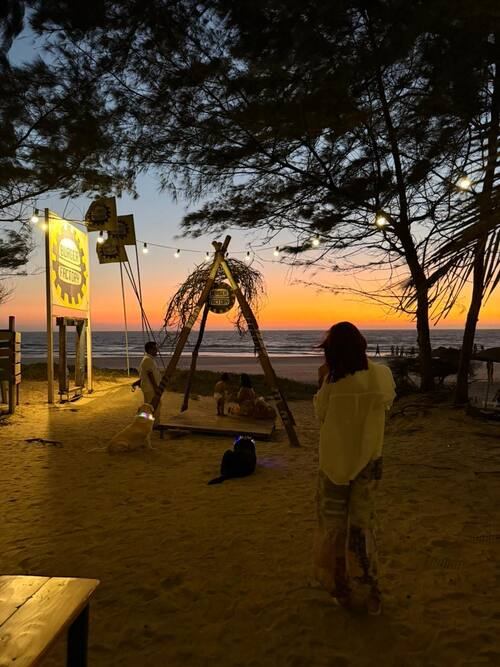
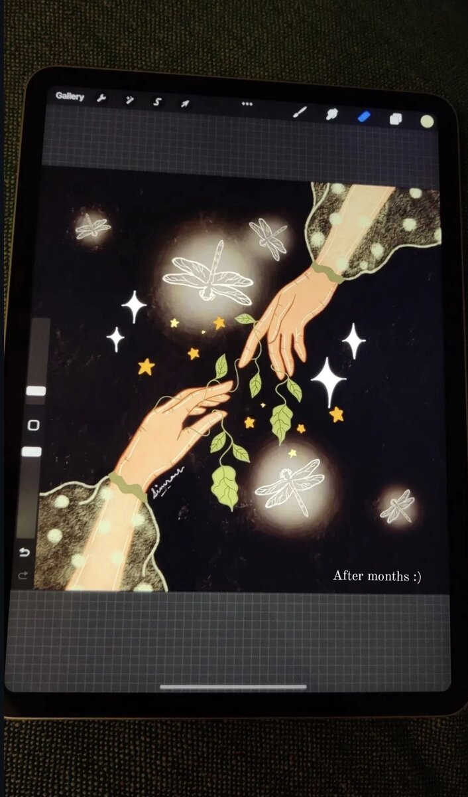
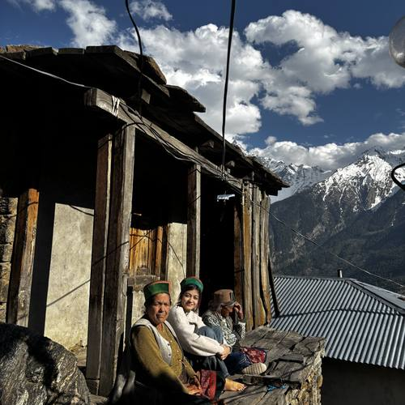
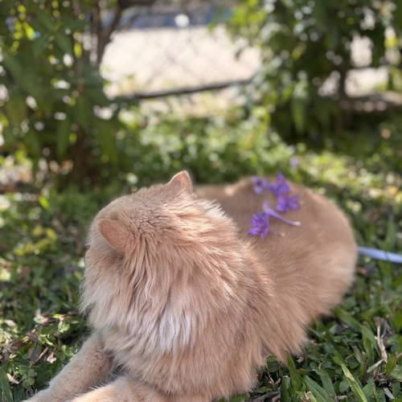

Can money between friends feel less awkward?

Founding designer. Took the product from an early idea to launch—experience, system and brand.
- USERS
- 0 → 5K
- D1 RETENTION
- 80%
- COMPLETION
- +60%
HELLO, I’M SIMRAN — PRODUCT DESIGNER
I design complicated products to feel obvious.
See selected work ↓01—03 · SHIPPED PRODUCTS
Three products shaped through research, systems thinking and a bias toward shipping.

Founding designer. Took the product from an early idea to launch—experience, system and brand.

Advanced model-building workflows made obvious for operators—not only data scientists.

Provider workflows rebuilt around insights gathered from more than 30 user conversations.
WHEN CURIOSITY ESCAPES THE DAY JOB
VENT-ON · MENTAL HEALTH
We used humour and warmth as part of the product strategy—not as decoration pasted on afterwards.
VIEW CASE STUDY →
REDROP · PCOS CARE
One reassuring companion for information, tracking and ongoing care across three user groups.
VIEW CASE STUDY →
BEFORE FIGMA, I ASK
It saves more time than any shortcut.
Why are we building this?
Why does the user need to know that?
Why can’t this be simpler?
Why hasn’t this shipped yet?
OFF THE CLOCK
Outside work I’m dancing most evenings, making things with my hands, travelling when I can, or watching my two cats judge a decision I spent six hours defending.
More about me →








CURRENTLY